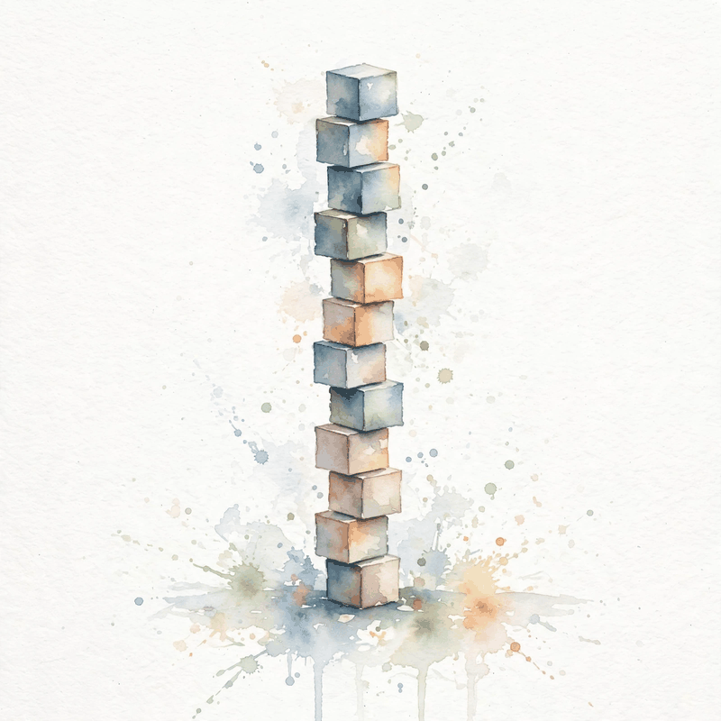

Unit 01 · NLP to transformer foundations
From words to blocks: how text becomes a model
Twelve concepts carry you from a sentiment toy to a full transformer block: tasks, tokenization, embeddings, word2vec, recurrence, gates, attention, masks, shapes, the LM loss, and the checks that keep it all honest. Every number below comes from the lesson. Nothing here invents a lecture that was never recorded.
How to read this page. Three tags separate fact from invention.
From the lesson A claim, number, or figure that appears in the lesson source, with its section cited.
Illustration Invented by the companion: an analogy, a toy with values you supply, or a what-if. Never lesson content.
Companion Editorial framing or a transferable principle. The lesson did not say it this way.


Every task is a function: name the input space, name the output space
From the lessonC01 items 2-3
The lesson opens with a question: what does understanding text mean as an engineering target? Its toy answer is concrete. The input I love this movie maps to the label positive. The task becomes fixed only when the input space (strings) and the output space ({positive, negative}) are fixed. Without a fixed output space and a scoring rule, no loss exists.
From the lessonC01 items 5-6
Two families split on the output space. Discriminative tasks model P(y | x) directly and train with cross-entropy over K classes. Generative tasks model P(t | s) autoregressively and train with token-level cross-entropy. The split is about the output space, not about model size.
The lesson runs a linear bag-of-words toy. Vocabulary {I, love, hate, this, movie}, labels {pos, neg}. Weights w_love = +2, w_hate = -2, all others 0. I love this movie scores +2. I hate this movie scores -2. The sign decides the label. Two examples already separate the classes.
From the lessonC01 items 9, 11
Bag-of-words inference costs O(length) time and O(vocab) memory, but it cannot see word order, so not good and good look alike. That failure motivates sequence models. And when the output space is not fixed at all, as in open-domain dialogue, the classification framing fails and generation with human judgment takes over.
BPE: compression with a fixed codebook
From the lessonC02 items 2-5
The model eats integers, not letters. Who decides the integer for learning? The lesson answers with byte-pair encoding on a toy corpus: {low: 2, lower: 1, lowest: 1, new: 1, newer: 1}. BPE starts from characters and merges the most frequent adjacent pair. Tokenization is compression with a fixed codebook. Frequent strings earn their own token. Rare strings get spelled out in pieces.
From the lessonC02 item 6
The lesson computes pair counts on the toy corpus: (o, w): 4, (l, o): 4, (w, end): 3. Merge 1 joins (o, w). Tokens per word before any merge: 4.167. After merge 1, low becomes l ow end: 3 tokens instead of 4. Encoding then applies merges in rank order, left to right. Rank order, not discovery order, is what makes encoding deterministic.

From the lessonC02 item 11
The failure case is operational, not mathematical. A model trained with one BPE table and served with another sees shifted ids. Performance collapses while the code runs fine. The fix: version the tokenizer with the model.
Embeddings: ids are arbitrary, geometry is learned
From the lessonC03 items 2-4
The motivating question is disarmingly simple: ids are arbitrary (cat = 4521, dog = 908), so how does the model know they are related? The lesson's toy uses V = 6, d = 4. The table E sits in R^{V x d}. Row 0 is the vector for token 0. Lookup is row selection, not computation.
From the lessonC03 items 5, 9
The gradient flows into exactly one row per token occurrence: dL/dE[id] accumulates dL/de. Rows for absent tokens get no update. Over training, co-occurring tokens pull each other's rows into similar regions through the shared loss. Lookup costs O(1) per token. Memory is V times d floats: at V = 50k and d = 4096 in fp16, about 400 MB.
The lesson's toy table (seed 7, 6 by 4) gives the row for king as [0.21, -0.44, 0.09, 0.63]. Illustration The lesson itself marks these values illustrative, from its lab script. Treat them as a shape demo, not as learned truth.
From the lessonC03 item 11
Similar rows do not mean similar meaning. Antonyms like good and bad appear in similar contexts and land near each other. Geometry reflects distributional similarity, not truth.
| Quantity | Setup | Value |
|---|---|---|
| Table shape | Toy | E in R^{6 x 4} |
| Lookup of id 0 | Toy | row 0, unchanged, shape (4,) |
| Table memory | V = 50k, d = 4096, fp16 | about 400 MB |
| Param count | V = 32000, d = 4096, fp16 | 131,072,000 params, 250 MB |
| Rows updated by ids [3, 3, 7] | Lab E2 | rows 3 and 7 only |
Word2vec: meaning as a side effect of prediction
From the lessonC04 items 2-5
How do vectors learn meaning without labels? The lesson's answer is skip-gram: predict context words from the center word, and let the vectors be a side effect of that prediction task. Words that share contexts need similar vectors to make similar predictions. The training signal is which words appear near each other, and the embedding table absorbs it.
From the lessonC04 items 5-6
Full softmax over V costs O(V) per step. Negative sampling replaces it: score the true pair high and k random pairs low with logistic loss, at O(d times (1 + k)) per step. The gradient pushes the center vector toward true context rows and away from negative rows. On the toy (seed 7, V = 6, d = 4), the center king gives P(woman | king) = 0.2261, P(king | king) = 0.1984, P(throne | king) = 0.1542, and the six probabilities sum to 1.000000.
From the lessonC04 item 11
One vector per word cannot hold two meanings. Bank as river edge and bank as money house get a single blurred vector, and the two senses average. Contextual models fix this by making the vector a function of the sentence.
The RNN: memory as a leaky summary
From the lessonC05 items 2-5
Bag-of-words ignores order. How does a model remember what came before? The Elman recurrence answers: h_t = tanh(W x_t + U h_{t-1} + b). The state is the memory, and the recurrence is the update rule. The same W, U, b apply at every step, with weight tying over time.
From the lessonC05 items 5-6
Backprop through time multiplies the same Jacobian at every hop. Over k steps the gradient scales like rho to the k, where rho is the spectral radius of the effective matrix. The lesson's toy is scalar: U = 0.5, tanh derivative near 1. After 10 steps the gradient scales by 0.5^10, about 0.00098. A loss signal from step 10 reaches step 0 at one-thousandth strength.
From the lessonC05 item 5 Gradient decay bench: the lesson's rho-to-the-k rule, on your numbers.
Try rho 0.8 at 20 steps (lab E2), then rho 1.2 at 10 steps. Below 1 the signal dies. Above 1 it explodes, and that is why clipping exists.
From the lessonC05 item 11
The broken assumption: the state can hold long-range information. The counterexample: subject-verb agreement across a 30-word relative clause. The gradient signal decays to noise and the model guesses. LSTMs and attention are the two historical fixes.
The LSTM: three gates guard one conveyor belt
From the lessonC06 items 2-5
The RNN gradient dies over distance. How can a state carry information unchanged? The cell update answers: c_t = f_t times c_{t-1} + i_t times g_t. If the forget gate f_t = 1 and the input gate i_t = 0, the cell copies itself exactly. Three gates guard one conveyor belt: forget decides what to erase, input what to write, output what to read. The belt itself has no squashing, so gradients ride it untouched.
From the lessonC06 item 6
The lesson traces scalars: c_0 = 2.0, f = [1, 1, 0.5], i times g = [0, 0.4, 0]. Then c_1 = 2.0, c_2 = 2.4, c_3 = 1.2. The gradient dc_3/dc_0 = 1 times 1 times 0.5 = 0.5, not 0.5^3. The ones preserved the signal where the RNN let it decay. The derivative dc_t/dc_{t-1} = f_t is the constant error carousel: when f_t sits near 1, the gradient passes unchanged.
From the lessonC06 items 9, 11
Four gate matrices mean 4 times the parameters of a plain RNN per layer, and the model still runs sequentially over time. The extra parameters are the price of the protected path. And gates do not learn long dependencies on their own: with random init the forget gate starts near 0.5, so the common fix initializes the forget bias to 1. Architecture helps only when init cooperates.
Attention: a soft dictionary lookup
From the lessonC07 items 2-5
The decoder needs one source word, but the encoder compressed everything into one vector. Which part should it read? The lesson's toy: source states s_1, s_2, s_3 and a query q. Scores e_i = v^T tanh(W s_i + U q). Weights a = softmax(e). Context c = sum a_i s_i. The query asks, the keys answer with scores, the values deliver content. The weights form a distribution, so the context is an expectation over source states.
From the lessonC07 items 6, 9
The toy scores e = [1.0, 2.0, 0.5]. Exponentials give [2.718, 7.389, 1.649], sum 11.756, weights a = [0.231, 0.629, 0.140]. The context is 0.231 s_1 + 0.629 s_2 + 0.140 s_3. State 2 dominates. The model looks mostly at position 2. Scoring costs O(T) per query, and the gradient path from output to any source state is O(1). That short path is the win over recurrence.

From the lessonC07 items 5-6, R0.2 Softmax bench: the lesson's score to weight rule, on your scores.
Try 0, 0, 0 for uniform weights (lab E1), then one large score to watch the context collapse onto a single state.
From the lessonC07 item 11
The weights are not faithful explanations. Different weight patterns can yield the same output. Treat them as mechanism, not as proof of reasoning.
The transformer block: talk, then think, with a highway past both
From the lessonC08 items 2-5
Attention mixes positions. What processes each position after mixing? The lesson's toy block, pre-norm layout: y = x + Attn(LN(x)), then z = y + FFN(LN(y)). Two residuals, two norms, one mixing step, one per-position step. The block alternates communication (attention: positions talk) and computation (FFN: each position thinks). Residuals carry the original signal past both. Norms keep scales stable.
From the lessonC08 items 5-6
Self-attention treats Q = K = V = x: each position attends over all positions. The residual x + F(x) gives a direct gradient path: dL/dx includes dL/dy unchanged. LayerNorm normalizes the last axis to zero mean and unit variance, then applies learned scale and shift. The FFN is a two-layer MLP, d to 4d to d, applied per position. On the toy shapes B = 2, T = 8, d = 64, the shape stays (2, 8, 64) after attention and after the FFN. Nothing changes shape inside the block. Only the values change. A 12-layer model applies this 12 times.
From the lessonC08 items 9, 11
Attention costs O(T^2 d), the FFN O(T d^2), memory O(T^2) for the weights plus O(T d) activations per layer. Pre-norm is more stable than post-norm at depth. And stacking more blocks does not always help: without residuals, a 24-layer net degrades below a 12-layer one. Depth needs the gradient highway.
Masks: the do-not-look list
From the lessonC09 items 2-5
At training time the model sees the whole sequence. How do we stop position 3 from reading the answer at position 5? The toy: a 4 by 4 score matrix, add negative infinity above the diagonal, softmax each row. The mask is a do-not-look list, and it applies to scores, never to weights.
From the lessonC09 items 5-6
Softmax of [s_1, negative infinity] = [1, 0]: the exponential of negative infinity is 0, so the forbidden cell gets zero mass and the row still sums to 1. Masking after softmax instead would steal mass from allowed cells unless renormalized, and it leaks through the gradient. The lesson's computed rows (seed 7): [1.000, 0, 0, 0], [0.375, 0.625, 0, 0], [0.131, 0.275, 0.594, 0], [0.371, 0.192, 0.346, 0.092]. Every row sums to 1. Every future cell is 0.

From the lessonC09 items 8, 11
The checks are one-liners with teeth: row sums are 1 to 1e-6, the strict upper triangle is exactly 0, row 0 is [1, 0, 0, 0]. The failure mode is a classic silent disaster. A training run with the mask accidentally disabled shows great loss, because the model reads the future, and generates garbage. The eval gap exposes it. Always test the mask with the row-0 check.
Shapes: the type system of deep learning
From the lessonC10 items 2-5
The code runs but the loss is NaN. Where do you look first? The lesson answers: shapes. Its toy uses B = 2, T = 8, d = 64, h = 4, V = 1000. Read shapes right to left: (B, T, d) is B sequences, T positions, d features. Embedding lookup takes (B, T) ids to (B, T, d). Per head, Q, K, V are (B, h, T, 16). Scores are (B, h, T, T). The output merges heads back to (B, T, d). Unembedding gives logits (B, T, V). Most bugs are shape bugs wearing a math costume.
From the lessonC10 item 6
The lesson counts parameters for one layer at d = 64, h = 4. QKV plus output projections: 4 times 64 times 64 = 16384. FFN (d to 256 to d): 2 times 64 times 256 = 32768. LayerNorms: 4 times 64 = 256. Total per layer: 49408. Embeddings: 1000 times 64 = 64000. Small numbers, exact method. Large models scale the same way.
From the lessonC10 items 7, 11
Shape asserts are the cheapest test in the codebase. The failure case shows why: split (B, T, d) into (B, T, h, d_k), forget the transpose before the score product, and attention runs over the wrong axes while the loss still decreases slowly, hiding the bug. A shape assert on (B, h, T, T) catches it. One caution: the transpose bug passes shape checks written from the same wrong belief. Independent derivation, the nine-step trace, is what saves you.
The LM loss: one number for surprise
From the lessonC11 items 2-5
The model outputs a distribution. What single number says how surprised it is? The lesson's toy: target token cat, model p = [0.7, 0.2, 0.1]. Loss = negative log 0.7, about 0.357 nats. Perplexity = exp(0.357), about 1.43. The loss is the model's surprise at the truth. Perplexity converts surprise into effective vocabulary size: 1.43 means the model hesitates between about 1.4 tokens. Training maximizes the product of P(x_t | x before t) by maximum likelihood, takes logs to get a sum, and negates it for a loss. Teacher forcing feeds ground truth as inputs, which keeps training parallel.
From the lessonC11 items 6, 8
A three-token toy with true-token probabilities [0.7, 0.5, 0.8] gives losses [0.357, 0.693, 0.223], mean 0.424 nats, perplexity about 1.53. A uniform model over V = 1000 would give perplexity 1000. Sanity bounds: loss is never negative, perfect predictions give loss 0, uniform predictions give log V.
From the lessonC11 items 4, 6 Perplexity bench: the lesson's loss rule, on your probabilities.
Try 0.9, 0.9 (lab E1), then watch what a single 0.01 does to the mean. One confident mistake dominates the average.
From the lessonC11 item 11
Lower perplexity does not mean a better model for the task. Perplexity is comparable only under one tokenizer: across tokenizers it is meaningless. And low perplexity does not imply factuality.
Implementation checks: trust nothing unverified
From the lessonC12 items 2-5
The loss decreases but the model is wrong. What test would have caught it on day one? The lesson prescribes four checks, each under a minute, on a one-layer attention net over 8 tokens: the nine-step shape trace, the mask test, the gradient check, and the determinism check. Shapes, masks, gradients, and determinism are each one assert away from certainty. Bugs that pass silent checks cost weeks.
From the lessonC12 items 4-6
The gradient check compares the analytic dL/dW against (L(W+e) minus L(W-e)) / 2e and expects relative error below 1e-5 in fp64. The toy: W = [[0.5]], L = (Wx minus 1)^2 at x = 2. Analytic dL/dW = 0. Finite differences with e = 1e-6 agree. The mask check: attention rows sum to 1 and the future triangle is 0. The determinism check: two runs with one seed give bitwise-identical loss.
| Check | Invariant | Failure means |
|---|---|---|
| Shape trace | Nine steps match C10, logits (B, T, V) | A transpose or split bug in the plumbing |
| Mask test | Rows sum to 1, future triangle 0 | The mask was skipped or applied after softmax |
| Gradient check | Relative error below 1e-5 in fp64 | The backward pass does not implement the forward pass |
| Determinism | Two seeded runs, bitwise-identical loss | An unseeded op or a nondeterministic kernel |
From the lessonC12 item 9
Gradient checks cost O(parameters) forward passes, so they run on tiny configs only. Seeded determinism costs nothing. These checks run in CI, not in the training loop.
The playbook
Every lesson on this page, in order. Tap one to return to its chapter.